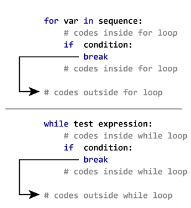

Loops¶
Datastics Lab | Created by Jubayer Hossain
Previous¶
What is Python?
Why Python Rocks in Research?
Little bit history of Python
Variables, Expressions, Comments
Data Types
Printing Messages
Operators in Python
Python Data Type Conversion
Python User Inputs
Algorithms and Flowcharts
ifstatementelsestatementelifstatement
Today¶
whilelooprange()functionforlooppassstatementbreakstatementcontinuestatement
Why Loops?¶
print("Bangladesh!")
print("Bangladesh!")
print("Bangladesh!")
print("Bangladesh!")
print("Bangladesh!")
Bangladesh!
Bangladesh!
Bangladesh!
Bangladesh!
Bangladesh!
while loop¶
Syntax¶
Counter
while condition:
Body of while
Flowchart¶

# Sum of 1-100 natural numbers
total = 0
n = 1
while n <= 100:
total = total + n
n = n+ 1
print(total)
5050
# Increment
i = 0
while i < 10:
i += 1
print(i)
1
2
3
4
5
6
7
8
9
10
# Decrement
i = 10
while i > 0:
i -= 1
print(i)
9
8
7
6
5
4
3
2
1
0
range() function¶
range(1,10)
range(1, 10)
range(1, 10, 2)
range(1, 10, 2)
list(range(10)) # range(i) ==> i - 1
[0, 1, 2, 3, 4, 5, 6, 7, 8, 9]
list(range(1, 10)) # range(i) ==> i - 1
[1, 2, 3, 4, 5, 6, 7, 8, 9]
list(range(1, 11)) # range(i) ==> i - 1
[1, 2, 3, 4, 5, 6, 7, 8, 9, 10]
list(range(1, 11, 2)) # range(i) ==> i - 1
[1, 3, 5, 7, 9]
list(range(10, 1, -2)) # range(i) ==> i - 1
[10, 8, 6, 4, 2]
# 1400, 2000(included) and 2 step
list(range(1400, 2001, 2))
[1400,
1402,
1404,
1406,
1408,
1410,
1412,
1414,
1416,
1418,
1420,
1422,
1424,
1426,
1428,
1430,
1432,
1434,
1436,
1438,
1440,
1442,
1444,
1446,
1448,
1450,
1452,
1454,
1456,
1458,
1460,
1462,
1464,
1466,
1468,
1470,
1472,
1474,
1476,
1478,
1480,
1482,
1484,
1486,
1488,
1490,
1492,
1494,
1496,
1498,
1500,
1502,
1504,
1506,
1508,
1510,
1512,
1514,
1516,
1518,
1520,
1522,
1524,
1526,
1528,
1530,
1532,
1534,
1536,
1538,
1540,
1542,
1544,
1546,
1548,
1550,
1552,
1554,
1556,
1558,
1560,
1562,
1564,
1566,
1568,
1570,
1572,
1574,
1576,
1578,
1580,
1582,
1584,
1586,
1588,
1590,
1592,
1594,
1596,
1598,
1600,
1602,
1604,
1606,
1608,
1610,
1612,
1614,
1616,
1618,
1620,
1622,
1624,
1626,
1628,
1630,
1632,
1634,
1636,
1638,
1640,
1642,
1644,
1646,
1648,
1650,
1652,
1654,
1656,
1658,
1660,
1662,
1664,
1666,
1668,
1670,
1672,
1674,
1676,
1678,
1680,
1682,
1684,
1686,
1688,
1690,
1692,
1694,
1696,
1698,
1700,
1702,
1704,
1706,
1708,
1710,
1712,
1714,
1716,
1718,
1720,
1722,
1724,
1726,
1728,
1730,
1732,
1734,
1736,
1738,
1740,
1742,
1744,
1746,
1748,
1750,
1752,
1754,
1756,
1758,
1760,
1762,
1764,
1766,
1768,
1770,
1772,
1774,
1776,
1778,
1780,
1782,
1784,
1786,
1788,
1790,
1792,
1794,
1796,
1798,
1800,
1802,
1804,
1806,
1808,
1810,
1812,
1814,
1816,
1818,
1820,
1822,
1824,
1826,
1828,
1830,
1832,
1834,
1836,
1838,
1840,
1842,
1844,
1846,
1848,
1850,
1852,
1854,
1856,
1858,
1860,
1862,
1864,
1866,
1868,
1870,
1872,
1874,
1876,
1878,
1880,
1882,
1884,
1886,
1888,
1890,
1892,
1894,
1896,
1898,
1900,
1902,
1904,
1906,
1908,
1910,
1912,
1914,
1916,
1918,
1920,
1922,
1924,
1926,
1928,
1930,
1932,
1934,
1936,
1938,
1940,
1942,
1944,
1946,
1948,
1950,
1952,
1954,
1956,
1958,
1960,
1962,
1964,
1966,
1968,
1970,
1972,
1974,
1976,
1978,
1980,
1982,
1984,
1986,
1988,
1990,
1992,
1994,
1996,
1998,
2000]
for loop¶
Syntax¶
for var in sequence:
Body of for
Flowchart¶

# List Iteration
li = [1, 2, 3]
for i in li:
print(i)
1
2
3
# String iteration
s = "Bangladesh"
for j in s:
print(j)
B
a
n
g
l
a
d
e
s
h
# for loop using range function: Increment
for n in range(1, 11):
print(n)
1
2
3
4
5
6
7
8
9
10
# for loop using range function: Decrement
for m in range(10, 0, -1):
print(m)
10
9
8
7
6
5
4
3
2
1
break statement¶


# Example of break statement in while loop-1
j = 0
while j < 10:
j += 1
if j == 5:
break
print(j)
1
2
3
4
# Example of break statement in while loop-2
x = 0
while x < 100:
x += 1
if x == 5:
break
print(x)
1
2
3
4
# Example of break statement in for loop-1
for y in range(1, 100):
if y == 5:
break
print(y)
1
2
3
4
# Example of break statement in for loop-2
for y in range(1, 100):
if y % 5 == 0:
break
print(y)
1
2
3
4
continue Statement in for and while loop¶


# Example of continue satement in while loop
x = 0
while x < 10:
x += 1
if x == 5:
continue
print(x)
1
2
3
4
6
7
8
9
10
# Example of continue satement in for loop
for y in range(1, 10):
if y == 5:
continue
print(y)
1
2
3
4
6
7
8
9
pass statement¶
# pass statement in python control flow structure
for i in range(10):
pass
x = 2
if x < 0:
pass
Resources¶
https://www.python.org/doc/essays/blurb/
https://dev.to/duomly/10-reasons-why-learning-python-is-still-a-great-idea-5abh
https://www.stat.washington.edu/~hoytak/blog/whypython.html
https://www.programiz.com/python-programming